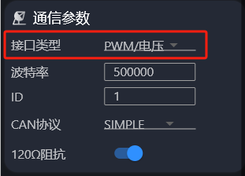

Traducción de la sección 4.4 del manual GIM6010-8 rev 2.2 (págs. 81–82 del original).
Esta función permite controlar cualquier parámetro escribible —posición, velocidad, par, etc.— mediante una señal RC PWM estándar (anchura de pulso de 1 ms a 2 ms, 50 Hz). Configurando un pin GPIO en modo PWM y estableciendo la correspondencia, se puede gobernar el motor directamente desde una emisora de radiocontrol o desde cualquier otro controlador PWM.
La línea de señal PWM se conecta en la posición de CANH descrita en el apartado 2.4.1. Esta entrada admite señales PWM de 5 V o menos, y la señal PWM debe compartir masa con el driver del motor.
odrv0.config.comm_intf_mux = 3
En el Motor Wizard también puede cambiarse la interfaz física desde los parámetros de comunicación; búsquela dentro de «电机参数» (parámetros del motor).

odrv0.config.gpio1_mode = GPIO_MODE_PWM
El PWM puede asociarse al modo de velocidad, de posición o de par; basta con configurar uno de los tres, según haga falta.
Ponga el motor en modo de rampa de velocidad (control_mode = 2, input_mode = 2):
odrv0.config.gpio1_pwm_mapping.endpoint = odrv0.axis0.controller._input_vel_property
Ponga el motor en modo de curva trapezoidal (control_mode = 3, input_mode = 5):
odrv0.config.gpio1_pwm_mapping.endpoint = odrv0.axis0.controller._input_pos_property
Ponga el motor en modo de rampa de par (control_mode = 1, input_mode = 6):
odrv0.config.gpio1_pwm_mapping.endpoint = odrv0.axis0.controller._input_torque_property
control_mode = 1 e input_mode = 6 corresponden a la rampa de par.odrv0.config.gpio1_pwm_mapping.min = -8.0 odrv0.config.gpio1_pwm_mapping.max = 8.0
min y max definen el rango de la magnitud de control al que se asigna la anchura del pulso PWM (de 1 ms a 2 ms). El driver convierte linealmente la anchura del pulso en un valor real dentro del intervalo [min, max] y lo escribe en el endpoint de consigna que se haya configurado. min y max pueden tomar cualquier valor según convenga.
odrv0.save_configuration()
Terminada esta configuración, ponga el motor en lazo cerrado y ya podrá controlarlo por PWM.